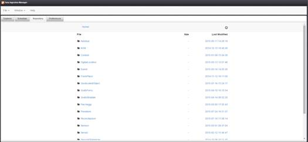
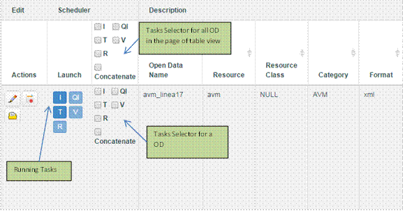

|
|
|
Data Ingestion Manager |
|
User Manual ver. 1.1 |
|
|
|
Ivan Bruno |
|
8/27/2015 |
Data Ingestion Manager User Manual
1 Overview
Data Ingestion Manager (DIM) allows the creation of Data records, setup and management of the ingestion process. The ingestion process starts by collecting raw Data and ends with the generation of RDF Triples according to the domain ontology model adopted. The creation of Data record and properties allows the insertion and editing of a Data in the repository. Data are described by a set of properties to be set like: Name, Category, Resource, Source, Format, Type (real-time or static) and more (see section 2.2 for a full list). The setup and management of ingestion process allows selecting tasks to execute both in the creation step and during the life of data for update purposes. The following tasks are available and could be executed singularly or joined (“concatenate”):
· Ingestion (I) of the data instances performs the raw data retrieval from the source where the Data is stored.
· Quality Improvement (QI) task is focused on enriching the Data by adding for instance links to external Linked Open Data (LOD) or refining possible inconsistences.
· Triples Generation (T) performs the generation of RDF Triples by mapping static, dynamic data on the basis of the domain ontology model.
· Validation (V) of the Data detects possible inconsistencies, incompleteness, correctness of relationships, etc…
· Reconciliation (R) task tries to solve the lack of coherence among indexed entities referring to the same concept but coming from different data sets.
2 Getting started
2.1 Application setup
The Data Ingestion Manager Application has to be configured to work with a Database (MySQL) where Data description and Scheduled Tasks are stored and the Task Scheduler and Manager Application (Smart Cloud Engine). The configuration properties are accessible in the “Preferences” tab panel (Section 3.2.3). Settings are:
MySQL Settings
|
Parameter |
Description |
|
Data Source Database User Name |
The MySQL user entitled to access to the database. |
|
Data Source Database Password |
The MySQL user password. |
|
Data Source Database URL |
The MySQL location URL. |
|
Data Source Database Name #1 |
The database schema name where Open Data are stored. |
|
Task Scheduler Database Name #2 |
The database schema name where Scheduled Tasks are stored. |
Scheduler Settings
|
Parameter |
Description |
|
Open Data Manager Scheduler URL to use |
The endpoint of API interface provided by the Smart Cloud Engine. |
|
Open Data Manager Scheduler Web Page URL |
The web URL of the Smart Cloud Engine Front End. |
2.2 Data Description
The following table reports and describes all properties associated with a Data. They are divided by groups: Description (D), Ingestion (I), Quality Improvement (QI), Triples Generation (T), Validation (V), Reconciliation (R), and General (G). For each property the description and type-value are provided.
|
Group |
Parameter |
Description |
Type & Value |
|
Description |
Name (*) |
Name of data set |
Alphanumeric String |
|
Resource (*) |
Data descriptor |
Alphanumeric String |
|
|
Resource class (*) |
Classification of data |
Alphanumeric String |
|
|
Category (*) |
Data category |
Alphanumeric String |
|
|
Source (*) |
Information on the source of the data, i.e. from where the data was obtained. |
Alphanumeric String |
|
|
Format (*) |
Format of data source |
Selection with the following option: · csv · json · kmz · shp · xml · rdf · sparql · kml · grid esri |
|
|
Automaticity (*) |
Set data processing mode: manually or automatically |
Selection with the following option: yes or no. |
|
|
Process type (*) |
Set the process mode adopted i.e. by using ETL process |
Selection with the following option: ETL or Other |
|
|
Access (*) |
Channel/Protocol to use for getting data |
Selection with the following option: · HTTP · WebService · Script · Manual Request · Access · Other |
|
|
Real time (*) |
Set the nature of data: real-time or static |
Selection with the following option: yes or no. |
|
|
Security Level |
Set the security Level to the Data |
Selection with the following options: OPEN, PRIVATE, SENSIBLE, CRITICAL |
|
|
Ingestion |
Ing path (*) |
Path where is located the ETL job related to Ingestion phase. |
Alphanumeric String |
|
Ing status |
Status of last Ingestion execution. |
Alphanumeric String |
|
|
Ing time |
Time processing of last ingestion running |
Alphanumeric String |
|
|
Last update |
Date of last Ingestion execution. |
Alphanumeric String |
|
|
Ing Error |
Ingestion Error description |
Alphanumeric String |
|
|
Quality Improvement |
QI path |
Path where is located the ETL job related to QI phase. |
Alphanumeric String |
|
QI status |
Status of execution. |
Alphanumeric String |
|
|
QI time |
Time processing of last run |
Alphanumeric String |
|
|
QI error |
Error description |
Alphanumeric String |
|
|
Triples Generation |
T path (*) |
Path where is located the ETL job related to Triple Generation phase. |
Alphanumeric String |
|
T status |
Status of execution. |
Alphanumeric String |
|
|
T time |
Time processing of last run |
Alphanumeric String |
|
|
Last triples date |
Production Date of last triples |
Date |
|
|
T error |
Error description |
Alphanumeric String |
|
|
Validation |
V path |
Path where is located the ETL job related to Validation phase. |
Alphanumeric String |
|
V status |
Status of execution. |
Alphanumeric String |
|
|
V time |
Time processing of last run |
Alphanumeric String |
|
|
Triples Count |
Number of triples to be uploaded into RDF repository. |
Alphanumeric String |
|
|
V error |
Error description |
Alphanumeric String |
|
|
Reconciliation |
R path |
Path where is located the ETL job related to Reconciliation phase. |
Alphanumeric String |
|
R status |
Status of execution. |
Alphanumeric String |
|
|
R time |
Time processing of last run |
Alphanumeric String |
|
|
Triples count rep |
Number of triples to uploaded into RDF repository. |
Alphanumeric String |
|
|
R error |
Error description |
Alphanumeric String |
|
|
General |
Period (*) |
Repeat time of process execution (in ms). |
Positive Number. (Default value 0 for static data) |
|
Overtime (*) |
Waiting time before stopping process execution (in ms). |
Positive Number (Default value 0) |
|
|
Param (*) |
Optional parameters for ETL job. |
Alphanumeric String (Default value “”) |
|
|
Description |
Textual description of the data |
Alphanumeric String |
|
|
License |
License URL |
The License URL to use for the Data |
Text of URL |
|
License Text |
The License Textual description |
Text plain or HTML |
2.3 Tasks description
Ingestion, Quality Improvement, Triples Generation, Validation, Reconciliation and General data are used to set up related tasks to be run in the scheduler. The minimal set of data for a task is the path where is located the ETL job to execute. The path is the command line to run the process In case of ingestion process we can have for example the following path definition:
/usr/lib/jvm/java-7-oracle/bin/java -Xmx512m -classpath :/home/ubuntu/programs/data-integration/lib/* -DDI_HOME=/home/ubuntu/programs/data-integration/ org.pentaho.di.kitchen.Kitchen -file=/media/Trasformazioni/TrasformazioneAVM_new/JobAVM.kjb -level=Nothing -param:line=17 -param:processName=avm_linea17
For periodical processing (i.e. real time Data), the value of Period has to be provided and it has to be expressed in milliseconds.
Param is required for the task as extra parameters.
Overtime is the time the scheduler has to wait before stopping the process.
Note: Since Ingestion and Triples Generations are the minimal chain for Data processing, their definition is mandatory. By default, tasks of all new Data are not scheduled and the Open Data are disabled for processing. This allows verifying the data before starting. After that Open Data has been enabled for processing and all tasks can be put in execution in the scheduler (see Section 5.).
3 Application Layout
The application provides a menu bar and tab panels as depicted in Figure 1.

Figure 1 - Application Layout
3.1 Menu Bar
The application provides a drop-down menu in the Menu Bar:
The menu is structured as follows:
· File
o New – Create a new Data
o Close – Close current activity
· Window
o Explorer – Switch to the corresponding panel for managing Data
o Scheduler – Switch to the corresponding panel for accessing to the Data Process Scheduler View
o Repository – Switch to the corresponding panel for accessing to the Repository View
o Preferences – Switch to the corresponding panel for editing the setup & configuration parameters
· Help – Open the Help
3.2 Tab Panels
They provide the view panels for:

3.2.1 Explorer
This is the view on the database of Data. It provides a table data view with pagination system, a command bar, search and help tools.
Table data view
Data are listed in a table data view. Columns are sortable and grouped according to the section 2.2. Two additional set of columns are added on the left. Such columns are: Edit and Scheduler. The former provides actions for the corresponding Data (i.e. Edit) whereas the latter allows defining and controlling tasks allocated in the scheduler.
Command Bar
It provides a set of commands for Processing control and Data management.
The first allows interacting with the Task Scheduler Application and are executed on a selection of tasks associated with Data.
· Execute – it allows running tasks associated with Data
· Delete - it allows deleting tasks associated with Data
· Pause - it allows pausing tasks associated with Data
· Resume - it allows resuming tasks associated with Data
Commands can be invoked if a selection of Tasks is available otherwise the following message is popped up: “No data selected! Select data and activities before execute”
The second set provides commands to interact with Data:
· Add New - A shortcut to add a new Data
· Delete - Delete a selection of Data.
· Enable Processing – Enable a selection of Data to include them in processing activities.
· Disable Processing – Disable a selection of Data to exclude them from processing.
Search and Help Tools
It provides some facilities to refine search and browsing data in the table view.
· Show – Set the number of results per page
· Filtering data – It is possible to filter Data by:
o Type: Real time, Static or Any.
o Processing status: Enabled, Disabled or Any.
· Search – Search input allows a textual searching.
· Select / Deselect All – It allows multiple selections of Data on the current page of results.
· Manual Selection – Clicking a Data row allows selecting or deselecting it.
· Refresh – It allows refreshing the current page of results
· Show / Hide columns – It allows hiding (showing) the following groups of column: Ingestion, Quality Improvement, Triples Generation, Validation and Reconciliation.
3.2.2 Scheduler
This view embeds the Scheduler Front End and allows browsing and monitoring the current status of tasks.
Figure 2 - Smart Cloud Engine
Please refers to the guide available at the link http://www.disit.org/drupal/?q=en-US/home&axoid=urn%3Aaxmedis%3A00000%3Aobj%3A0a4cdfa0-135a-4b5d-837b-5cf1b3507089
3.2.3 Repository
This tab provides the access to the repositories of triples for each data. A view of file system is displayed to allow user to browse the folder associated with each data (Figure 3) until the triples files level (Figure 4).

Figure 3- Repository View (Main Root)
Figure 4- Repository View (Triples Files level)
3.2.4 Properties
This view provides the form for configuring the application. The following form asks for settings as described in section 2.1

Figure 5 - Configuration Settings
4 Edit a Data
In this section is described how to insert a new Data or update an existing one.
4.1 Create a new Data
To add a new Data click File->New in the menu bar or “Add New” in the Explorer Panel. The form depicted in Figure 4 is displayed. The Data Properties are divided by groups (tabs) as described in section 2.2. Mandatory fields are marked with (*).
Figure 6 - Data Edit Dialog
Click Save to send data or Close to abort the editing.
4.2 Data validation
Before sending data, the form is validated against required data. In event of missing data, a list is displayed with a button “Edit”; by clicking on the button the form displays the tab containing the missing field highlighted in red.
Figure 7 - Data Edit Dialog after validation
4.3 Update Metadata of Data
Click on the button in Actions column to update a Data. The form described in section 4.1 will be displayed. In this case, the Data Name attribute is disabled and cannot be modified.
Click Save to send data or Close to abort the editing.
4.3.1 Inline Editing
Double click on a data cell allows editing the value inline: a text control is displayed to edit the value. Click Enter key on keyboard to end and send changes. Press ESC key to abort.
Figure 8 - Inline Editing
4.4 Browse Triples Files of Data
Click on the button in Actions column to open the Data Folder in the Repository of triples files. A dialog will display the list of folders and user can browse them by clicking on File entries/links.
4.5 View License of a Data
Click on the button in Actions column to open the License Data Information Dialog. It will display the License Text associated with the data.
4.6 Selecting Data
Click on the row to select a Data row in the table. To select all or deselect Data click on the button of Search and Help Tools. Selected rows will be highlighted as depicted in Figure 9.
Figure 9 - Selection of rows
5 Working with tasks
All Data disabled for processing are marked as Processing Disabled. For all Data enabled for processing the Scheduler Column provides: the launch status of tasks (for I, QI etc…) in the sub-column Launch and a Tasks Selector panel (checkboxes) for choosing tasks to be controlled. Running tasks are highlighted and information about their activities is reported in the corresponding columns (sections) of the row in the table.

5.1 Controlling tasks
Tasks can be controlled for Data enabled and ready for processing. The following commands are available.
5.1.1 Activate/Executing
One or more tasks can be activated by clicking on the corresponding checkbox of Tasks Selector. To send to the scheduler (SCE) the execution command about the choice done it is necessary to click on the Execute command in the Processing command bar.
To execute tasks for a selection of Data, click on checkboxes in Scheduler header to apply the choice to all Open Data and then click on the Execute command in the Processing command bar.
5.1.2 Pause/Resume
If one or more tasks have to be paused/resumed, click on the corresponding checkbox of Tasks Selector. To send to the scheduler (SCE) the pause/resume command about the choice done it is necessary to click on the Pause/Resume command in the Processing command bar.
To pause/resume tasks for a selection of Data, click on checkboxes in Scheduler header to apply the choice to all Open Data and then click on the Pause/Resume command in the Processing command bar.
5.1.3 Delete
If one or more tasks have to be deleted, click on the corresponding checkbox of Tasks Selector. To send to the scheduler (SCE) the delete command about the choice done click on the Delete command in the Processing command bar.
To delete tasks for a selection of Data, click on checkboxes in Scheduler header to apply the choice to all Open Data and then click on the Delete command in the Processing command bar.
5.1.4 Concatenate Tasks
Selecting the “concatenate” option, all selected tasks are joined: they are executed as an ordered sequence of tasks